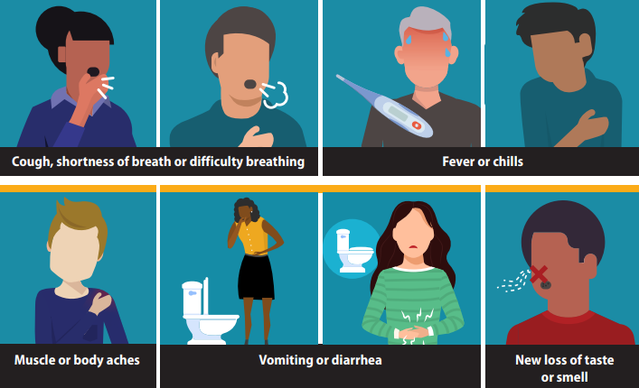
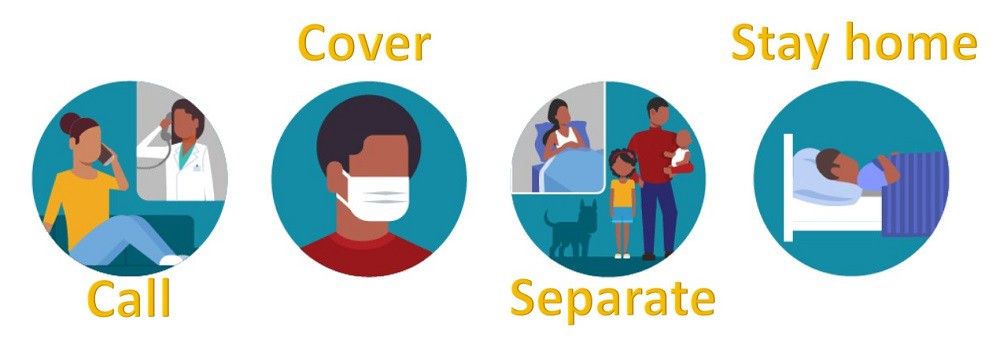

Symptoms of covid 19 and ways to deal with the disease
People with COVID-19 have had a wide range of symptoms reported – ranging from mild symptoms to severe illness.
Symptoms may appear 2-14 days after exposure to the virus. Anyone can have mild to severe symptoms.
People with these symptoms may have COVID-19:
- Fever or chills.
- Cough.
- Shortness of breath or difficulty breathing.
- Fatigue.
- Muscle or body aches.
- Headache.
- New loss of taste or smell.
- Sore throat.
- Congestion or runny nose.
- Nausea or vomiting.
- Diarrhea.

What to Do If You Are Sick
If you have a fever, cough or other symptoms, you might have COVID-19. Most people have mild illness and are able to recover at home. If you are sick:
Keep track of your symptoms.
If you have an emergency warning sign (including trouble breathing), call 911.

Created by : Ahmed Reda Ebrahim Eldsoky